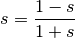

skrf.network.y2s¶
- skrf.network.y2s(y)¶
convert admittance parameters to scattering parameters [1]

Parameters : z : complex array-like or number
impedance parameters
Returns : s : complex array-like or number
scattering parameters
See also
- s2z
- converts scattering parameters to impedance parameters
- s2y
- converts scattering parameters to admittance parameters
- s2t
- converts scattering parameters to scattering transfer parameters
- z2s
- converts impedance parameters to scattering parameters
- z2y
- converts impedance parameters to impedance parameters
- z2t
- converts impedance parameters to scattering transfer parameters
- y2s
- converts admittance parameters to impedance parameters
- y2z
- converts admittance parameters to impedance parameters
- y2z
- converts admittance parameters to scattering transfer parameters
- t2s
- converts scattering transfer paramerters to scattering parameters
- t2z
- converts scattering transfer paramerters to impedance parameters
- t2y
- converts scattering transfer paramerters to admittance parameters
References
[1] http://en.wikipedia.org/wiki/Two-port_network